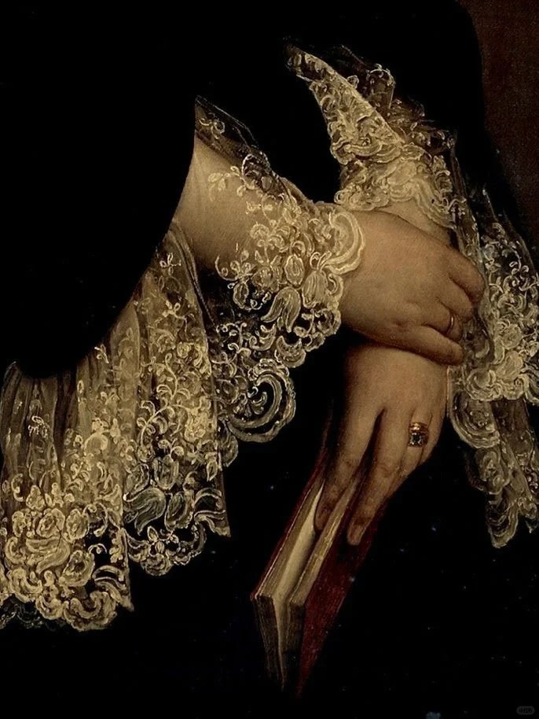
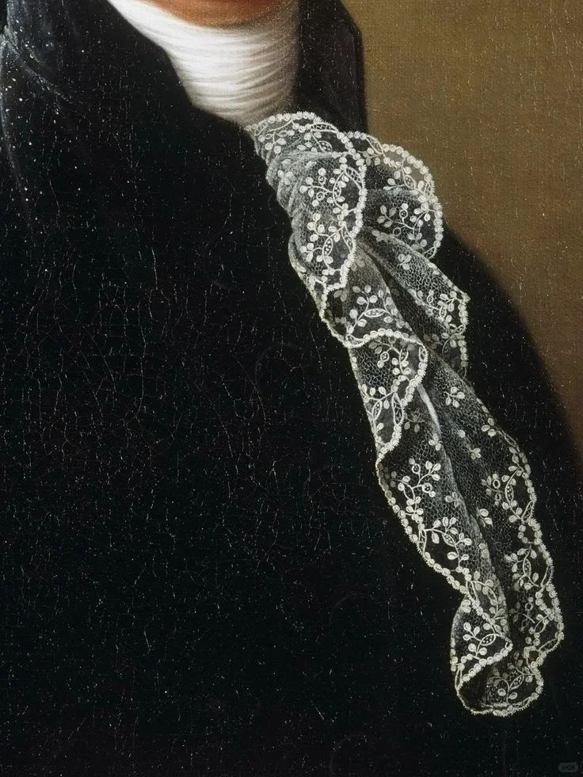
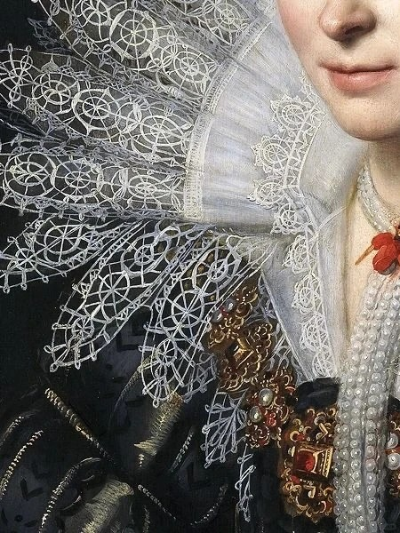
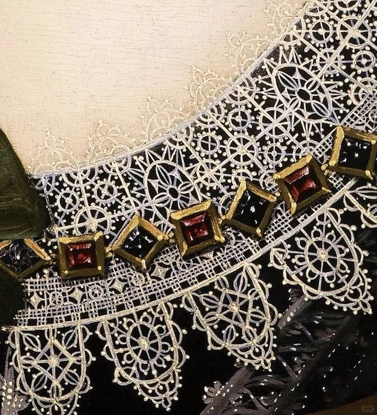
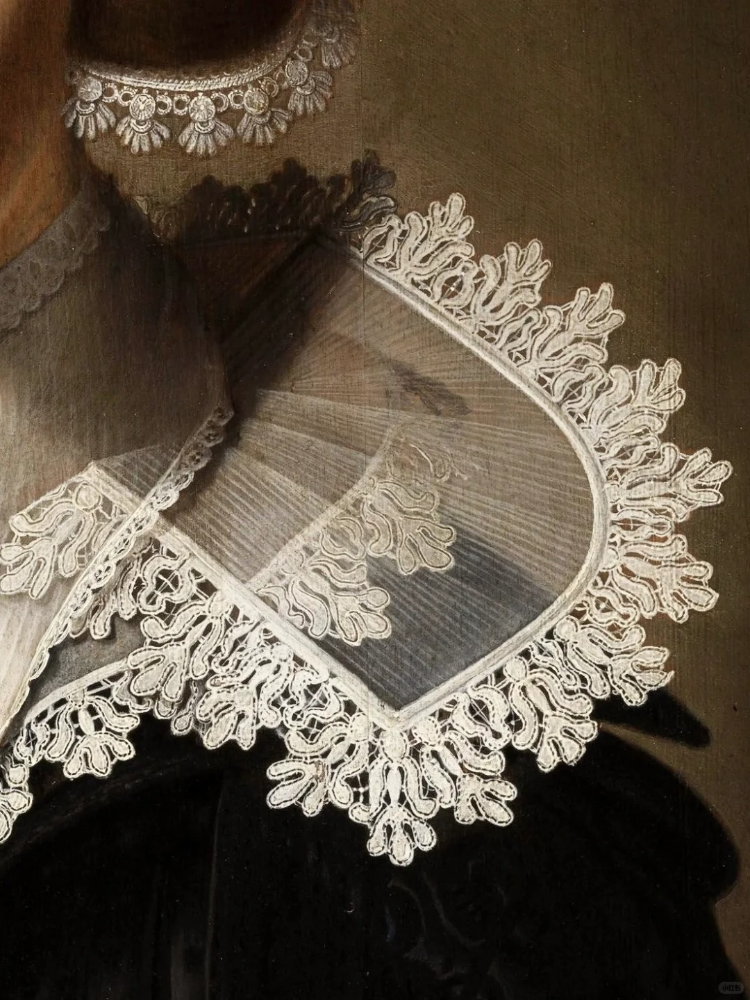
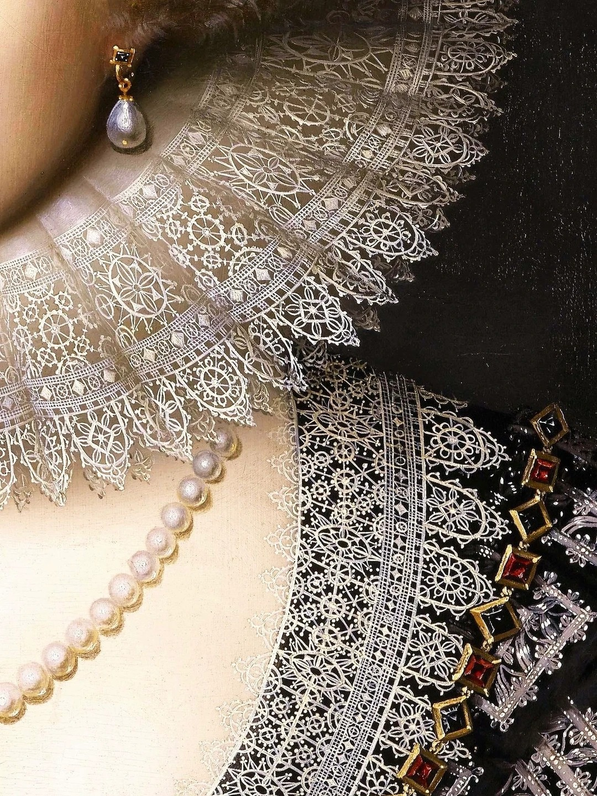
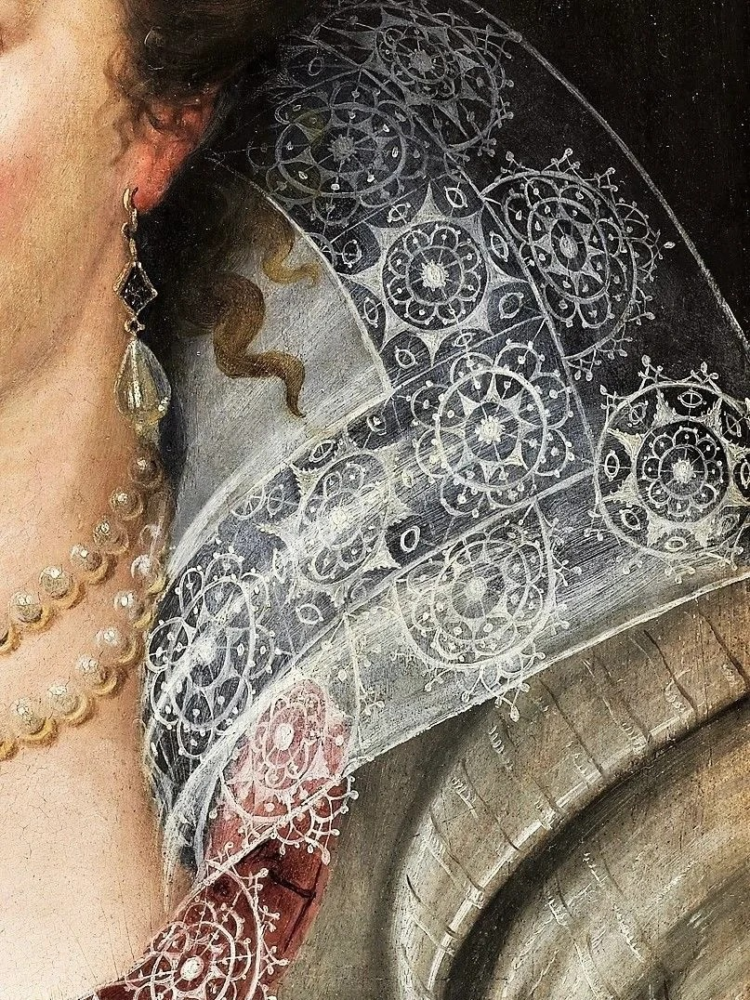
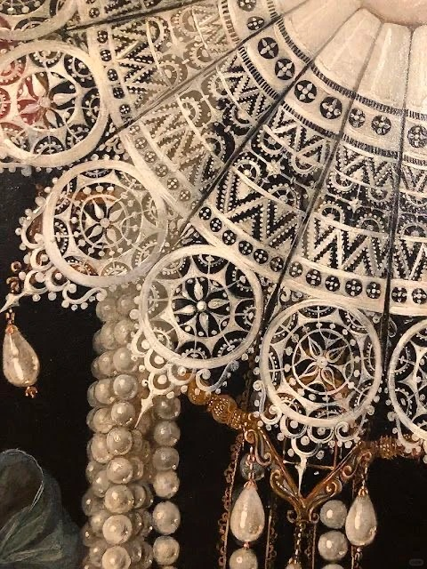

Lace fabric is not only a frequently used element by designers in clothing, but also an indispensable creative art for oil painters in classical portrait paintings.



Lace collars and cuffs were popular in 18th century aristocratic portraits, symbolizing elegance and status.

From the late 15th to early 16th century, Italy became a major producer of lace for clothing decoration. Lace remained a luxury item accessible only to the nobility. Influenced by the Rococo artistic style, lace gained popularity across Western Europe and gradually spread worldwide.
